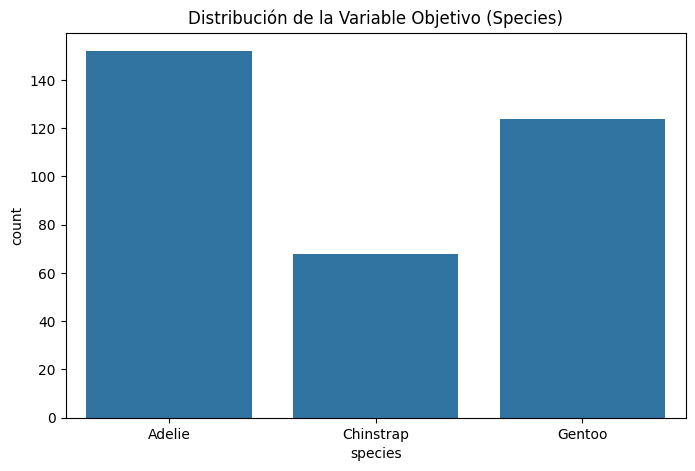
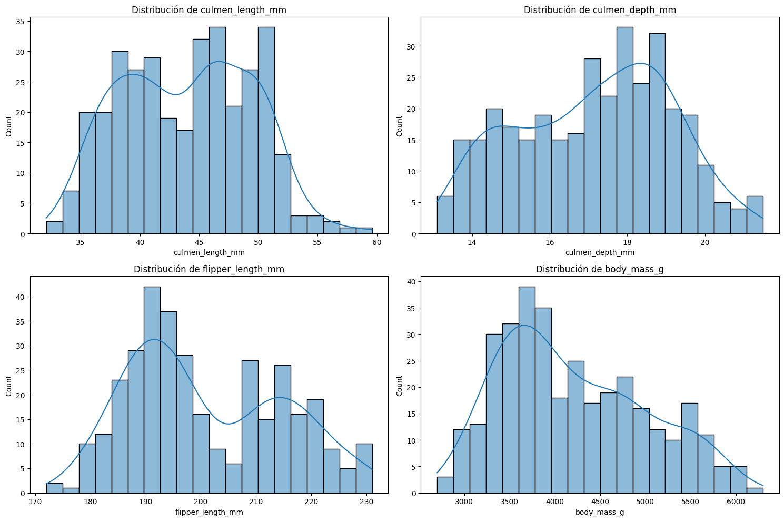

# Importamos las librerías necesarias
import pandas as pd
import numpy as np
import matplotlib.pyplot as plt
import seaborn as sns
from pathlib import PathEDA - Nivel 1
Nivel 1 - Análisis básico
En este nivel, nuestro objetivo es dominar lo básico: entender la estructura de nuestros datos antes de intentar cualquier modelado complejo.
Nos enfocaremos en las siguientes etapas:
- Calidad del Dato: Entender tipos de variables (numéricas vs. categóricas) y detectar valores nulos.
- Análisis Univariado: Estudiar cada variable por separado (distribución, conteos).
- Limpieza Básica: Resolver problemas sencillos de datos faltantes.
- Relación Inicial: Ver como algunas columnas ayudan a establecer una diferencia.
Para este ejemplo haremos uso de una fuente de datos simple, se trata de un colección de datos sobre 3 especies de pingüinos antárticos.
- Adelie
- Chinstrap
- Gentoo
El dataset contiene las siguientes columnas:
- species
- culmen_length_mm
- culmen_depth_mm
- flipper_length_mm
- body_mass_g
- island
- sex
1. CARGA DE DATOS
# Importamos el dataset
base_dir = Path.cwd()
csv_file_path = base_dir.parent.parent.parent / "data" / "penguins" / "penguins_size.csv"
df = pd.read_csv(csv_file_path, low_memory=False)
# Mostramos la primera fila del DataFrame para verificar que se ha cargado correctamente
df.head(1)| species | island | culmen_length_mm | culmen_depth_mm | flipper_length_mm | body_mass_g | sex | |
|---|---|---|---|---|---|---|---|
| 0 | Adelie | Torgersen | 39.1 | 18.7 | 181.0 | 3750.0 | MALE |
2. INSPECCIÓN GENERAL
Objetivo
Antes de analizar nada, debemos entender la “forma” y la salud técnica de los datos.
1. Dimensiones
Primero verificamos el tamaño del dataset. ¿Cuántas observaciones (filas) y variables (columnas) tenemos?
# .shape nos devuelve una tupla con el número de (filas, columnas)
print(f"Dimensiones del dataset: {df.shape}")Dimensiones del dataset: (344, 7)Análisis: Observamos que tenemos 344 filas y 7 columnas. Es un dataset pequeño, ideal para aprender.
2. Tipos de Datos
Es fundamental saber qué columnas son numéricas y cuáles son texto (objetos). Esto es crucial para evitar errores, como intentar calcular el promedio de una columna de texto.
# .info() nos muestra los tipos de datos y si hay valores faltantes (null)
df.info()<class 'pandas.core.frame.DataFrame'>
RangeIndex: 344 entries, 0 to 343
Data columns (total 7 columns):
# Column Non-Null Count Dtype
--- ------ -------------- -----
0 species 344 non-null object
1 island 344 non-null object
2 culmen_length_mm 342 non-null float64
3 culmen_depth_mm 342 non-null float64
4 flipper_length_mm 342 non-null float64
5 body_mass_g 342 non-null float64
6 sex 334 non-null object
dtypes: float64(4), object(3)
memory usage: 18.9+ KB# De forma alternativa puedes usar .dtypes para ver los tipos de datos de cada columna
df.dtypes.value_counts()float64 4
object 3
Name: count, dtype: int64Análisis: Vemos que hay columnas ‘object’ (texto) como
species,island,sex. También notamos que algunas columnas tienen menos de 344 valores ‘non-null’, lo que indica datos faltantes que deberemos tratar.
3. Estadísticas Básicas
Damos un vistazo rápido a la distribución de las variables numéricas: media, mínimo, máximo y desviación estándar. Esto nos ayuda a identificar rangos extraños a primera vista.
# .describe() genera un resumen estadístico de las columnas numéricas
df.describe()| culmen_length_mm | culmen_depth_mm | flipper_length_mm | body_mass_g | |
|---|---|---|---|---|
| count | 342.000000 | 342.000000 | 342.000000 | 342.000000 |
| mean | 43.921930 | 17.151170 | 200.915205 | 4201.754386 |
| std | 5.459584 | 1.974793 | 14.061714 | 801.954536 |
| min | 32.100000 | 13.100000 | 172.000000 | 2700.000000 |
| 25% | 39.225000 | 15.600000 | 190.000000 | 3550.000000 |
| 50% | 44.450000 | 17.300000 | 197.000000 | 4050.000000 |
| 75% | 48.500000 | 18.700000 | 213.000000 | 4750.000000 |
| max | 59.600000 | 21.500000 | 231.000000 | 6300.000000 |
Análisis: Aquí vemos rangos de valores. Por ejemplo, la masa corporal va de 2700g a 6300g. No parecen haber valores negativos o imposibles (como peso 0) a simple vista.
3. ANÁLISIS DE VARIABLE OBJETIVO
Objetivo
Conocer qué estamos intentando predecir. En este caso: species.
Pregunta clave
¿Está balanceado el dataset? ¿Hay muchos más pingüinos de una especie que de otra?
plt.figure(figsize=(8, 5))
sns.countplot(x='species', data=df)
plt.title('Distribución de la Variable Objetivo (Species)')
plt.show()
# Verificamos los números exactos
print(df['species'].value_counts())
species
Adelie 152
Gentoo 124
Chinstrap 68
Name: count, dtype: int64Análisis: Notamos que ‘Adelie’ es la clase mayoritaria (152), seguida de ‘Gentoo’ (124) y ‘Chinstrap’ (68). Hay un desbalance, pero no es extremo.
4. ANÁLISIS UNIVARIADO (VARIABLE POR VARIABLE)
Objetivo
Ver cómo se comportan las variables “explicativas” (features) por separado.
4.1 Variables Numéricas
Analizaremos la distribución de variables como el largo de la aleta, la masa corporal y las medidas del pico. Usaremos histogramas para ver si siguen una distribución normal o si tienen sesgos.
# Seleccionamos columnas numéricas de interés
numeric_cols = ['culmen_length_mm', 'culmen_depth_mm', 'flipper_length_mm', 'body_mass_g']
plt.figure(figsize=(15, 10))
for i, col in enumerate(numeric_cols, 1):
plt.subplot(2, 2, i)
sns.histplot(df[col], kde=True, bins=20)
plt.title(f'Distribución de {col}')
plt.tight_layout()
plt.show()
Análisis:
- Flipper Length (Aleta): Parece tener una distribución bimodal (dos picos), lo que sugiere que podría haber dos grupos distintos de pingüinos mezclados (quizás por especie).
- Body Mass (Masa): Tiene un sesgo positivo (cola hacia la derecha), indicando que hay menos pingüinos muy pesados.
4.2 Variables Categóricas
Ahora veremos las variables cualitativas: Isla y Sexo.
fig, axes = plt.subplots(1, 2, figsize=(12, 5))
# Gráfico para Island
sns.countplot(x='island', data=df, ax=axes[0])
axes[0].set_title('Distribución por Isla')
# Gráfico para Sex
sns.countplot(x='sex', data=df, ax=axes[1])
axes[1].set_title('Distribución por Sexo')
plt.tight_layout()
plt.show()
Análisis:
- Isla: La isla ‘Biscoe’ tiene la mayor cantidad de registros.
- Sexo: Parece haber un problema en la columna ‘sex’. Vemos una barra muy pequeña o extraña (posiblemente un punto ‘.’ o valor nulo malformado) además de Male/Female. Esto es un hallazgo de calidad de datos importante.
5. LIMPIEZA DE DATOS
Objetivo
Resolver problemas obvios antes de buscar relaciones complejas.
1. Detección de Valores Nulos
Primero identificamos dónde están los valores faltantes (NaN).
# .isnull().sum() cuenta los valores nulos por columna
print(df.isnull().sum())
# También verificamos el valor extraño en 'sex' que vimos antes
print("\nValores únicos en 'sex':", df['sex'].unique())species 0
island 0
culmen_length_mm 2
culmen_depth_mm 2
flipper_length_mm 2
body_mass_g 2
sex 10
dtype: int64
Valores únicos en 'sex': ['MALE' 'FEMALE' nan '.']Análisis:
- Vemos algunos valores nulos en las variables numéricas y en
sex.- Confirmamos que en
sexhay un valor.que debe ser tratado como nulo o error.
2. Acción
En este nivel básico, aplicaremos dos estrategias comunes:
- Imputación: Rellenar los valores faltantes con un estimado razonable. Para variables categóricas como
sex, usaremos la moda (el valor más frecuente). - Eliminación: Si son pocas filas las que tienen datos faltantes en variables numéricas, podemos optar por eliminarlas para no introducir ruido.
# 1. Tratamos el valor '.' en 'sex' como NaN
df.loc[df['sex'] == '.', 'sex'] = np.nan
# 2. Imputamos 'sex' con la moda
moda_sex = df['sex'].mode()[0]
df['sex'] = df['sex'].fillna(moda_sex)
print(f"Valores nulos en 'sex' después de imputar: {df['sex'].isnull().sum()}")
# 3. Eliminamos filas con nulos restantes (en variables numéricas)
# Como son pocas (menos del 5% de los datos), la eliminación es segura en este nivel.
df = df.dropna()
# Verificamos que el dataset esté limpio
print("\nConteo de nulos final:")
print(df.isnull().sum())
print(f"\nDimensiones finales del dataset: {df.shape}")Valores nulos en 'sex' después de imputar: 0
Conteo de nulos final:
species 0
island 0
culmen_length_mm 0
culmen_depth_mm 0
flipper_length_mm 0
body_mass_g 0
sex 0
dtype: int64
Dimensiones finales del dataset: (342, 7)6. ANÁLISIS BIVARIADO (RELACIONES)
Objetivo
En este punto verificaremos si las variables ayudan a separar las especies.
6.1 Numérico vs. Variable Objetivo
¿La masa corporal varía según la especie? Usaremos un boxplot para visualizar la distribución de la masa corporal para cada especie.
plt.figure(figsize=(8, 6))
sns.boxplot(x='species', y='body_mass_g', data=df)
plt.title('Masa Corporal por Especie')
plt.show()
Análisis:
- Vemos que la especie Gentoo es claramente más pesada que las otras dos (Adelie y Chinstrap).
- Adelie y Chinstrap tienen rangos de peso similares, por lo que la masa corporal por sí sola no es suficiente para distinguirlas entre ellas.
6.2 Numérico vs. Numérico (Scatterplot)
Este es el gráfico más poderoso. Veremos la relación entre el largo y la profundidad del pico, coloreando los puntos por especie (hue='species').
plt.figure(figsize=(10, 6))
sns.scatterplot(x='culmen_length_mm', y='culmen_depth_mm', hue='species', data=df)
plt.title('Largo de Pico vs. Profundidad de Pico (por Especie)')
plt.show()
Análisis:
- Este gráfico es revelador. Podemos ver tres grupos claramente separados.
- Adelie: Picos cortos y profundos (abajo a la izquierda/centro).
- Gentoo: Picos de longitud media pero menos profundos (abajo a la derecha).
- Chinstrap: Picos largos y profundos (arriba a la derecha).
- Esto confirma que la combinación de estas dos variables es excelente para clasificar las especies.
7. CONCLUSIONES
Resumen de Hallazgos
Hemos completado nuestro primer Análisis Exploratorio de Datos (EDA).
¿Qué hemos aprendido?
- Calidad de Datos: El dataset es pequeño pero tenía problemas reales (valores nulos, un valor extraño en ‘sex’). Aprendimos a detectarlos y solucionarlos con estrategias básicas.
- Variables Importantes:
- La Masa Corporal ayuda a separar a los Gentoo (más pesados) de los otros dos, pero confunde a Adelie y Chinstrap.
- La combinación de Largo de Pico y Profundidad de Pico es la clave. El scatterplot nos mostró tres grupos bien definidos.
Próximos Pasos (Nivel 2)
Aunque hemos limpiado y visualizado los datos, todavía no están listos para un algoritmo de Machine Learning.
- Codificación: Los modelos matemáticos no entienden texto como “Male”, “Female” o “Biscoe”. Necesitaremos convertir estas categorías a números (Encoding).
- Correlaciones: Necesitamos medir matemáticamente qué tan fuerte es la relación entre variables (Matriz de Correlación).